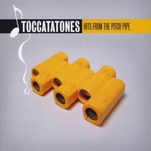
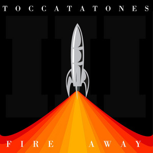
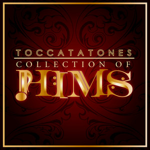
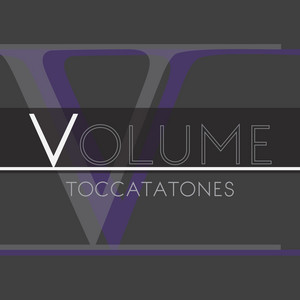
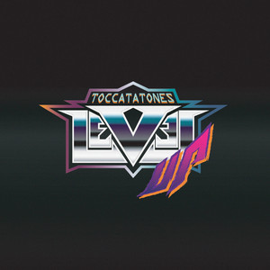
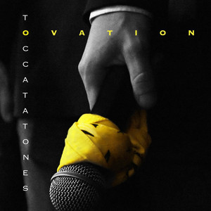

About Us
The Toccatatones are High Point University’s premier all-male A Capella group. Originating in 2001, the Toccatatones are the first and oldest group from HPU. The T-Tones pride themselves on their wide range of genres that they cover in their albums and their electric stage performances.
Since the group's inception, the T-Tones have produced 6 studio albums and EP’s:
- Hits From the Pitch Pipe
- Fire Away
- Collection of Hims
- Volume
- Level Up
- Ovation
The Toccatatones are a nationally recognized group as they have been featured twice on a BOCA (Best of College A Capella) compilation and Twice on a Voices Only Compilation. Their most recent hit Sober Up was featured on both Voices Only 2019, Vol. 1 (A Cappella) and BOCA 2020: Best of College A Cappella. Out of the recording booth and on stage, the Toccatatones have performed on some of the biggest stages in A Capella including Carnegie Hall, the BOSS competition in Boston, as well as competing in the 2020 Regional ICCA at the Carolina Theater. The Toccatatones also recently celebrated their 20th anniversary and are rumored to be releasing a new albumn soon.
|  |  |  |
|  |  |  |